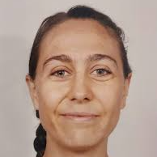
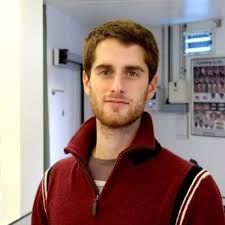
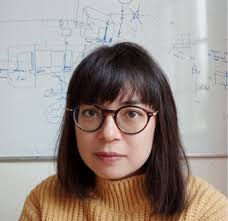
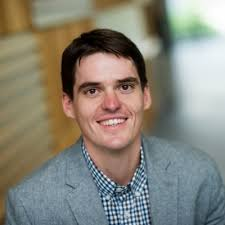
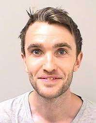
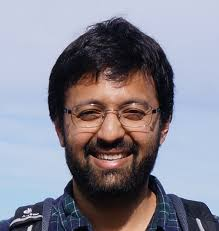
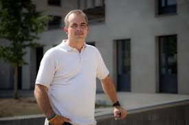
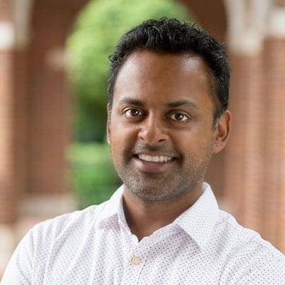
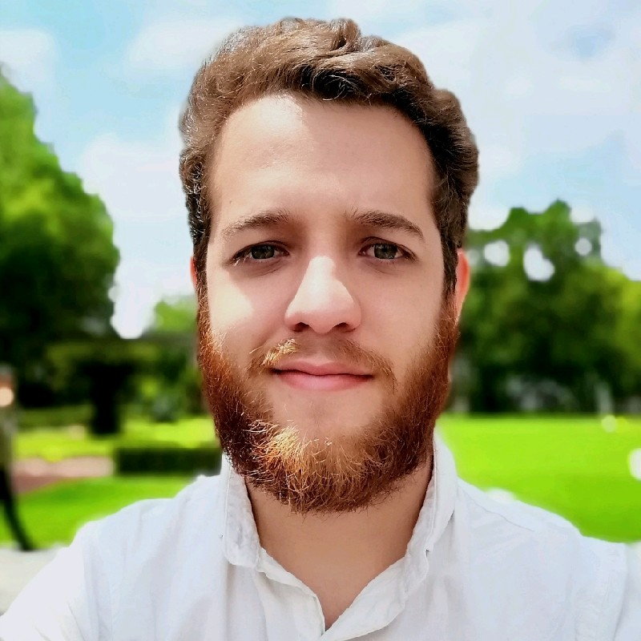

Speakers

Laureline Logiaco
Massachusetts Instituve of Technology

Rui Ponte Costa
University of Oxford

Alex Cayco Gajic
École Normale Supérieure

Jordan A. Taylor
Princeton University

James Heald
University College London

Ashesh Dhawale
Indian Institute of Science, Bangalore

Tim Vogels
Institute of Science and Technology, Austria
Weinan Sun
Cornell University
Athena Akrami
University College London

Kishore Kuchibhotla
Johns Hopkins University


Miguel Angel Nuñez Ochoa
Janelia Research Campus